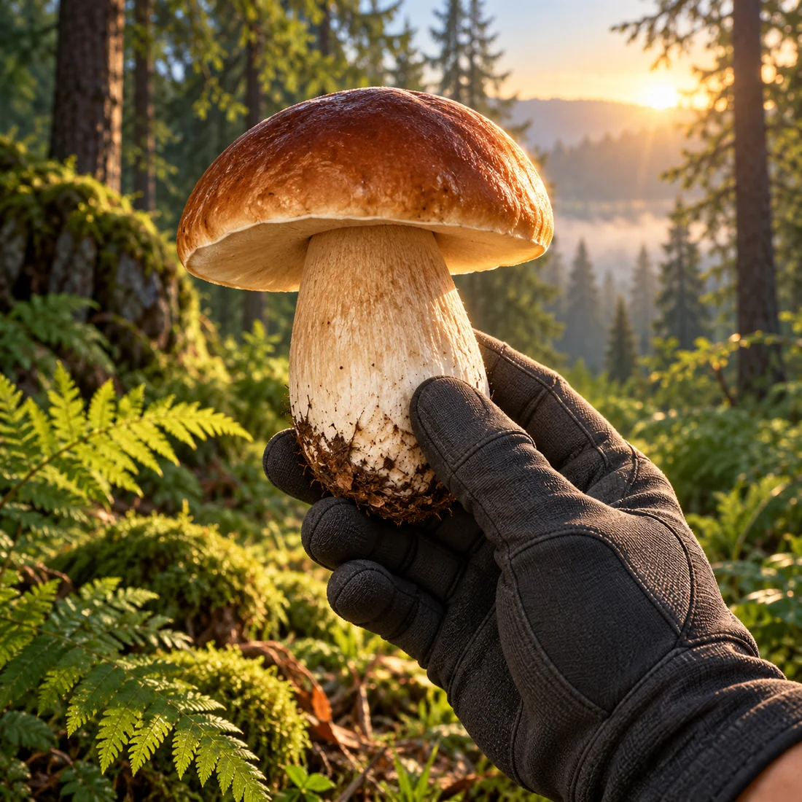
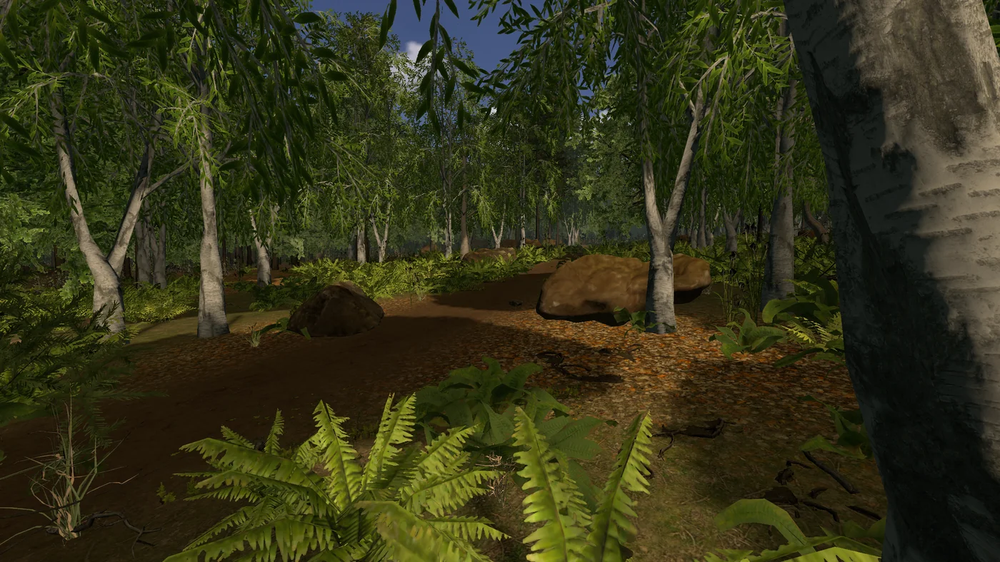
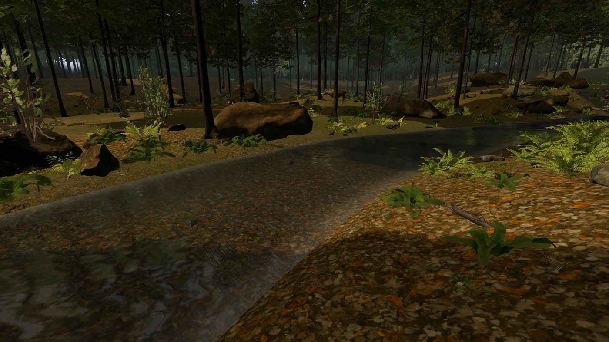
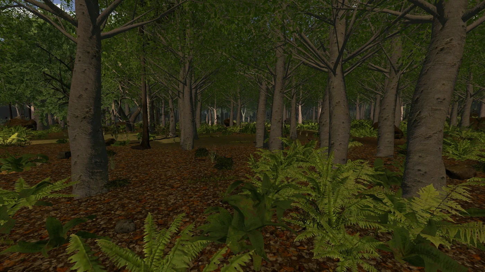
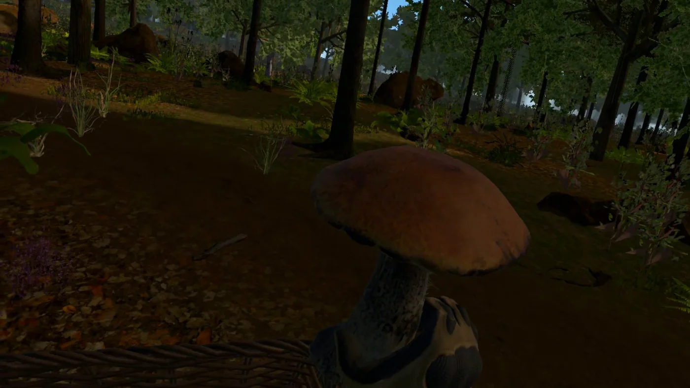
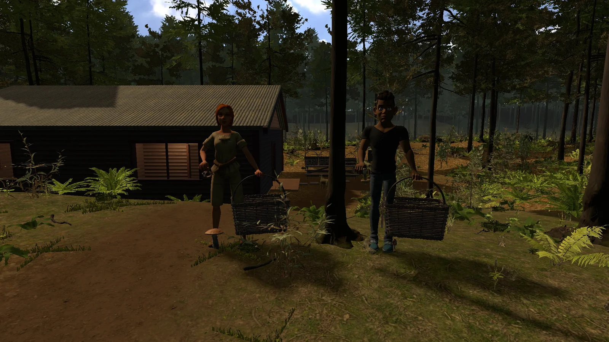
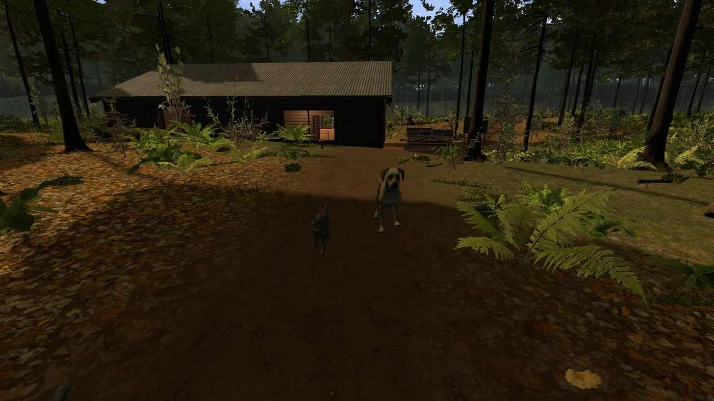

Your forest.
Your pace.
Step into the trees. Find a little treasure. Bring it home. A peaceful mushroom-picking adventure, alone or with friends.

Take the long
way home.
A river around the next bend. Ferns under the pines. A quiet clearing you haven't seen before. Let curiosity lead you through a forest that keeps unfolding as you explore.
Follow the changing light from morning to night, then find your way back with your compass and the map of your journey.




A small find.
A good day.
- 01
Gather your harvest.
Reach towards a mushroom, pull it into your hand and drop it into your basket.
- 02
Bring it home.
Return to your woodland cottage and tip your basket over the cooking pot.
- 03
See how you did.
Cook and enjoy your meal. Choose carefully: poisonous mushrooms change how your forage ends.
Sometimes, a basket and a little curiosity are all you need.
Come for a wander.
Gather, cook and explore.
A look at life in ForestVR.
Development footage. Gathering and cooking recorded by a player on Meta Quest; scenery recorded in-game on PC. The co-op scene is staged with the game's multiplayer avatars. Music: “Hymn To The Dawn” by Scott Buckley, CC BY 4.0.
Film & asset credits ↗
Your walk.
Our adventure.
Invite friends with a room code. Gather side by side, add a mushroom to a friend's basket and talk through spatial voice chat as you explore.
Prefer a quiet afternoon? The whole forest is yours to enjoy solo.
Make a friend along the way.
Stop to pet the cat or dog, and they'll follow you for a while. Keep an eye out for the woodland's other inhabitants as you wander.

Little moments.
A bigger world.
A few things you might find between leaving the cottage and finding your way back.
12 screenshots shown
Real in-game captures. Quest recordings and PC scenes are labelled separately. Select an image to take a closer look.
A few things
to know.
Where can I play ForestVR?
ForestVR is being prepared for Meta Quest 2 and Meta Quest 3. A store link will appear here when the release is available.
Can I play with friends?
Yes. Online multiplayer supports up to four players in one session. Host a room, share its code and gather together. Voice chat is optional, with push-to-talk and always-on modes.
Can I play seated?
Yes. Choose seated or standing mode, adjust your height and select your dominant hand. The game supports controller input and hand tracking.
How do I find my way back?
Your map shows your route, your cottage and the positions of other players in a multiplayer session. You can also use the compass and bring out a flashlight after dark.
Can I save my progress?
Yes. Save your game and return to your progress later, including the mushrooms in your basket. Saves and preferences are stored on your device.
Is this a real-world mushroom identification guide?
No. ForestVR is a game. Do not use its models, names or cooking outcomes to decide whether a real mushroom is safe to eat.
See you among the trees.
Questions about ForestVR, press enquiries or a little feedback from your latest walk? We'd like to hear from you.